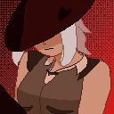

I received my High School Diploma from St. Edmund's Preparatory High School.
Work/Internships
I was an Information Technology Intern at my high school. There, I collaborated with cross-functional teams to efficiently handle an extensive volume of requests, and assist in fixing technological issues within the school
Programming Skills
I've worked using C++, Html, Java, Javascript, Ruby, and CSS in the past. I'd say I'm beginner level in all except for javascript.
Interests and Hobbies
Pokemon: Since the day I got White 2 on the DS, I've loved it. My favorite Pokemon is Rotom. Can't wait for Legends: ZA!

Favorite Things
Song: I can't pick one, so I'm choosing one that is stuck in my head (at the time of writing this).
Test Drive - John Powell
Movie: Both my favorite song and favorite movie are from the same thing, so I'll put the scene that made me fall in love with both of them.
Show: One Piece easily. I wouldn't want to spoil anything about it. This piece alone almost brought me to tears.
Favorite Website
No, I will not be disclosing my ELO, It is embarassing.